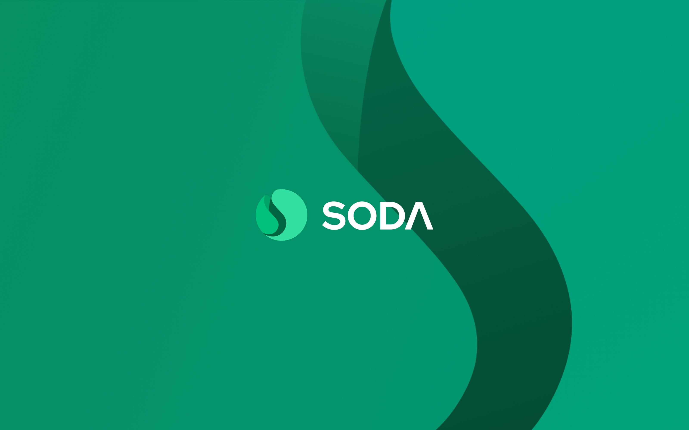
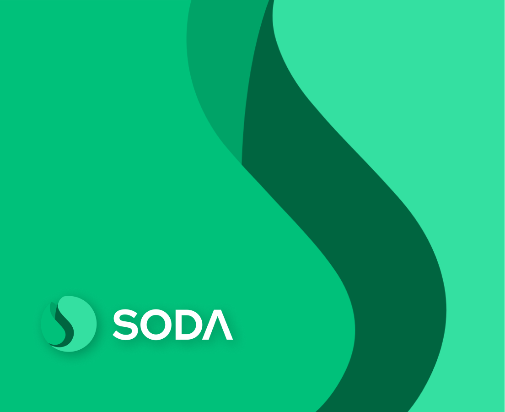
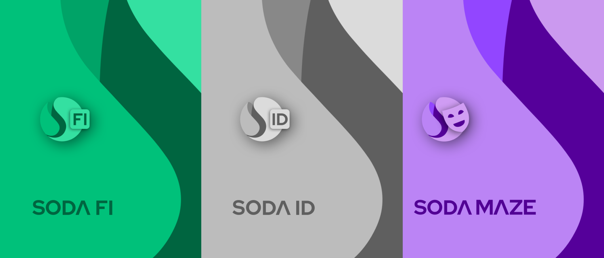
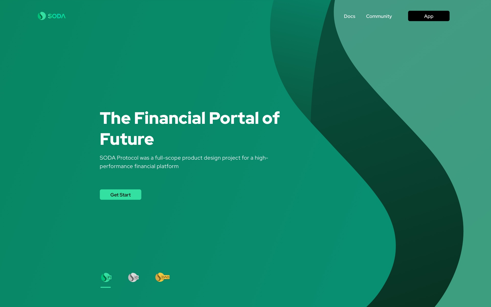
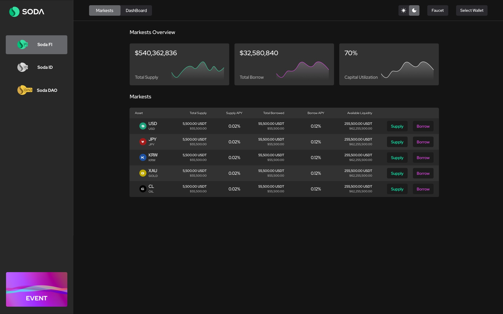
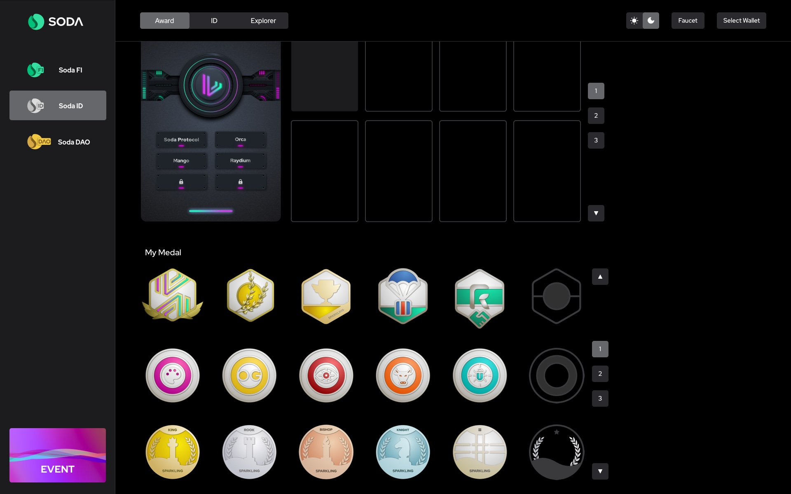
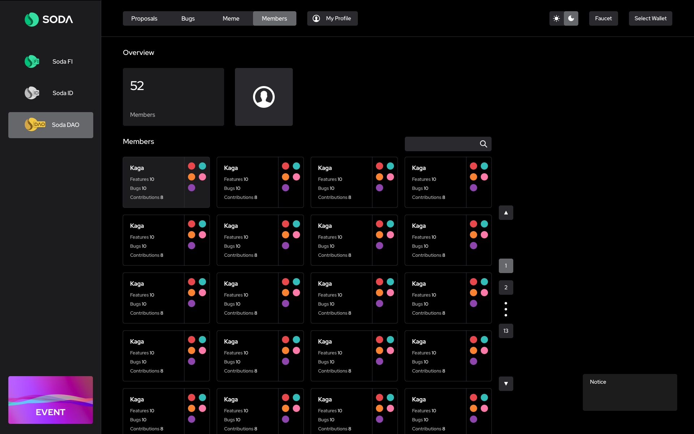
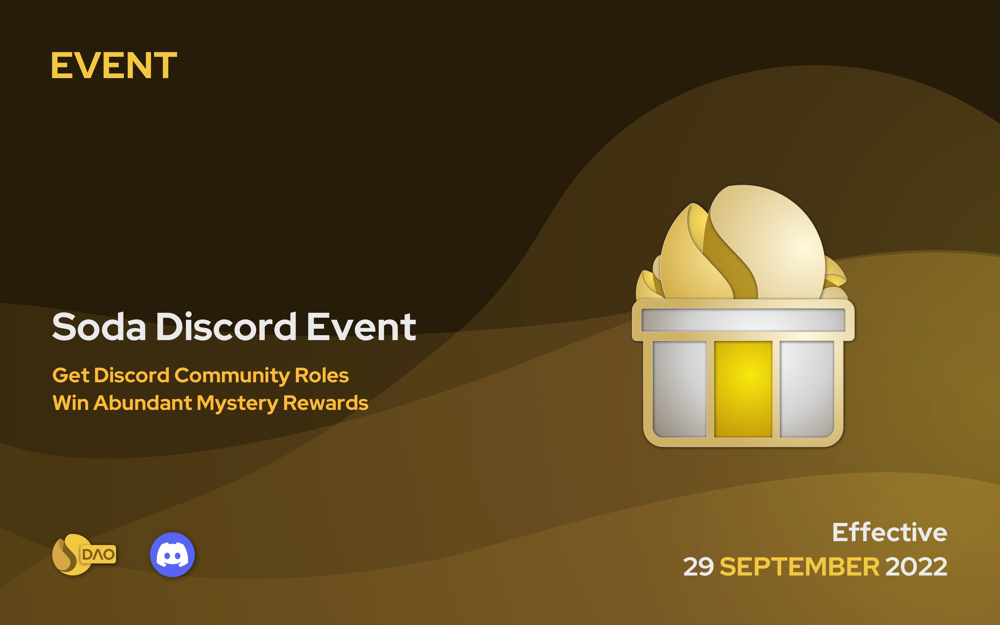

V1.0
V1.0Internal development and small-scale user testing.

SODA Protocol / Brand & Product Design
SODA Protocol was a full-scope product design project for a high-performance financial platform. I led the visual direction from logo and VI planning to product UI, website design, launch assets, and investor-facing presentation materials, keeping the product experience consistent from V1.0 through V3.0.
01 - Project Overview
The project needed more than isolated screens. It needed a coherent identity, a clear product interface, and a visual system that could scale across releases, marketing moments, and fundraising conversations.
My work covered the main visual design, including the logo, product-line visual planning, VI system, product UI, official website, app interface, social launch materials, and fundraising deck.
V1.0Internal development and small-scale user testing.
V2.0Public release for users.
V3.0Major upgrade for UI and product experience.
From internal validation to public release and a full product upgrade, the visual system evolved while keeping a consistent core identity.
VI visual system
The visual system was inspired by the name SODA. I wanted the product to feel as refreshing as opening a cold soda on a summer day, so I translated that feeling into rolling liquid forms, rising bubbles, and a crisp green palette. The SODA mark was kept simple enough to work across app icons, social assets, and presentation decks.
The system was also designed to extend across different product moods: a serious silver-white mode for verified-user contexts, and a more solemn purple mode for privacy-focused moments. The VI was not treated as decoration; it informed UI surfaces, badge states, cards, and launch visuals.


Design system direction
The design system translated the VI into reusable product pieces: panels, cards, badges, progress states, verified-user surfaces, privacy-oriented views, and launch visuals. This kept the product recognizable while still allowing each feature family to carry its own tone.
02 - Highlight Design
Beyond the core interface, the project included visual moments that made the experience easier to recognize and easier to share: achievement badges, release graphics, motion assets, and a stronger reward language.
Designed badge visuals to give users a stronger sense of progress, status, and completion.
IdentityExplored how points, levels, and progress could make advanced product actions easier to understand.
ProgressCreated interaction ideas for success feedback, badge unlocks, and celebratory product states.
MotionAchievement badge gallery
03 - My Role & Scope
Designed the logo, symbol direction, color language, and the foundation of the visual identity.
BrandPlanned the product-line visual logic and translated complex financial workflows into clearer interface patterns.
UXLed the UI and interaction design for all public releases from V1.0 to V3.0.
V1-V3Designed the official website and app UI so product, brand, and communication shared one visual language.
ProductCreated social announcement materials, including video, GIF, and image assets for product releases.
LaunchDesigned the fundraising deck and presentation visuals to support external communication.
Deck04 - Product UI Design
Structured pages and flows so users could understand high-density financial information with less friction.
Designed and refined every public release interface while keeping visual continuity across product changes.
Created the official website experience to communicate positioning, product features, and visual credibility.
Built app interfaces, interaction details, and state patterns for a product that users would revisit frequently.
Selected project assets





05 - Outcome & Reflection
I completed the project's full design workload and helped SODA Protocol reach a leading position among peer projects of the same period. The design system and presentation materials also supported the team in securing angel funding from institutional investors.
The strongest VI choices were the ones that could become UI surfaces, states, and launch assets.
Clear hierarchy, restrained color, and reusable components made dense financial information easier to scan.
The fundraising deck translated a complex product into a clearer story for external audiences.
Finance Platform / VI/UI System